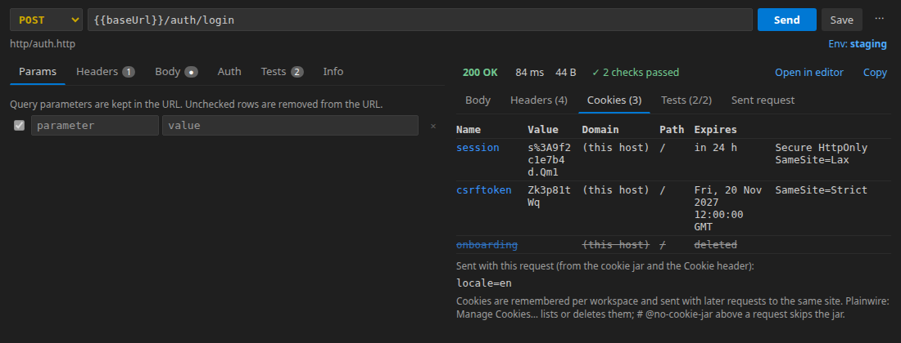

.http filesMany web apps and APIs log you in with a cookie, not a token: POST /login answers with Set-Cookie: session=…, often with a redirect, and every later request has to send that cookie back. Browsers do it without asking. Since 0.9, Plainwire does too: it keeps a cookie jar, so you send the login request once and the requests after it are logged in. Django, Rails, Laravel, Express sessions and CSRF cookies all work this way.

Cookie header that was sent.httpbin.org has endpoints that set and delete cookies and echo back the ones you send. Put this in cookies.http and press Send on each request, or Run all:
### Log in (sets a cookie, then redirects) # @assert status == 200 # @assert $.cookies.session == abc123 GET https://httpbin.org/cookies/set?session=abc123 ### A later request sends it # @assert $.cookies.session == abc123 GET https://httpbin.org/cookies ### Without the jar # @no-cookie-jar # @assert $.cookies.session !exists GET https://httpbin.org/cookies ### Log out (deletes it) GET https://httpbin.org/cookies/delete?session ### Gone # @assert $.cookies.session !exists GET https://httpbin.org/cookies
The first request gets a Set-Cookie together with a 302 redirect. Plainwire stores the cookie before following the redirect, so the page it lands on already sees it, as in a browser. The same file run in a terminal with the free CLI:
$ plainwire run cookies.http ✓ GET Log in (sets a cookie, then redirects) 200 · 778 ms · 2/2 checks ✓ GET A later request sends it 200 · 338 ms · 1/1 checks ✓ GET Without the jar 200 · 335 ms · 1/1 checks ✓ GET Log out (deletes it) 200 · 690 ms ✓ GET Gone 200 · 355 ms · 1/1 checks 5 passed, 0 failed (5 requests, 2504 ms)
That is a real run of the file above (20 November 2026). With --no-cookie-jar the same file gives 3 passed, 2 failed, which is what a client without a cookie jar does.
### Log in
# @name login
# @assert status == 200
# @assert cookie sessionid exists
POST {{baseUrl}}/accounts/login/
Content-Type: application/x-www-form-urlencoded
username={{user}}&password={{$dotenv APP_PASSWORD}}
### My orders (sends the session cookie)
# @assert status == 200
GET {{baseUrl}}/api/orders/
# @assert cookie <name> checks a cookie that this response sets; the usual operators work (exists, ==, startsWith, matches…, see tests in .http files). If a later request needs the cookie’s value somewhere else, for example a CSRF token in a header, read it from the login response: X-CSRFToken: {{login.response.headers.X-CSRFToken}} or from the body with {{login.response.body.$.csrf}}.
| Rule | What Plainwire does |
|---|---|
| Which requests get a cookie | The ones whose host and path match it, as in a browser (RFC 6265): a cookie without Domain goes back to the same host only; Domain=example.com also covers api.example.com; Path=/app covers /app and below. |
Secure cookies | Sent over https://, and also to localhost and 127.0.0.1 over plain http, so local development works. |
| Expiry | Max-Age and Expires are honoured; Max-Age=0 or a past date deletes the cookie. Session cookies stay until you clear them. |
| Redirects | Cookies set on every hop are stored, and each hop sends the cookies that match it. |
Your own Cookie: header | Sent as you wrote it. Jar cookies are added unless your header already has a cookie of that name, so yours wins. |
| Where it is kept | Extension: one jar per workspace, saved in VS Code’s workspace storage, so a login survives a window reload. CLI: one jar per plainwire run, in memory only. |
# @no-cookie-jar above a request: that request neither sends nor stores jar cookies. Same spelling as REST Client and the JetBrains HTTP Client, so existing files keep working. It is also a checkbox on the request editor’s Info tab."plainwire.rememberCookies": false turns the jar off in the extension.plainwire run --no-cookie-jar turns it off in the CLI.Cookie header that was sent.REST Client and the JetBrains HTTP Client also keep cookies between requests and use # @no-cookie-jar; Plainwire follows them, so a file moves between the three without edits. Plainwire adds the Cookies tab, the cookie check, and the same jar in the CLI and GitHub Action, where a login-then-test file runs unchanged. Copy as cURL and the other code snippets do not include jar cookies, so the snippet is the request exactly as written.
Yes, it is the same extension. Install the .vsix from the latest release; see installing in Cursor and VSCodium.
No. They are stored locally in the workspace and sent only to the sites that set them, with your own requests. There is no account and no telemetry; the source is on GitHub (MIT).
Not yet: each plainwire run starts with an empty jar. Put the login and the requests that need it in the same run (one file, or several files in one command).